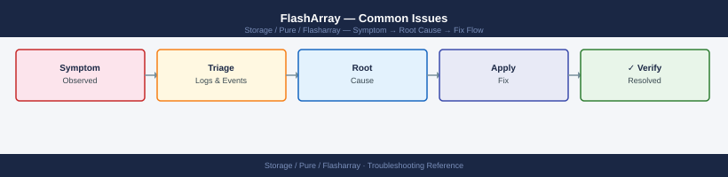

FlashArray — Common Issues¶

Diagnostic Flow¶
Before you begin¶
- Access: Storage admin credentials (cluster admin or equivalent)
- Gather first: recent error message text, event timestamps, and affected object names
- Scope: confirm whether the issue affects a single object, host, cluster, or site
- Escalation: open a vendor support ticket before running any destructive step
- Logging: document each command and output — required if escalation is needed
Drive Failure and Rebuild¶
Symptoms¶
purealert listshows a drive failure alert with severityerrorpuredrive listshows a drive infailed,recovering, orunhealthystate
Diagnosis¶
# Identify the failed drive and its bay location
puredrive list
# Monitor rebuild progress on a recovering drive
puredrive list --progress
# Check if there are multiple drive failures (increases risk)
puredrive list | grep -v healthy
# Check array hardware alerts for related events
purehw list
purealert list --filter "severity='error'"
Name Status Capacity Serial
drive.0 healthy 1.92TB PD-ABC123XYZ001
drive.1 healthy 1.92TB PD-ABC123XYZ002
drive.2 failed 1.92TB PD-ABC123XYZ003
drive.3 healthy 1.92TB PD-ABC123XYZ004
drive.4 recovering 1.92TB PD-ABC123XYZ005
drive.5 healthy 1.92TB PD-ABC123XYZ006
Name Status Capacity Progress Time_Remaining
drive.4 recovering 1.92TB 67% 2h 14m
Name Status Capacity Serial
drive.2 failed 1.92TB PD-ABC123XYZ003
drive.4 recovering 1.92TB PD-ABC123XYZ005
Component_ID Status Details
psu.0 ok Power Supply 0
psu.1 ok Power Supply 1
fan.0 warning Fan speed degraded
fan.1 ok Fan 1
controller.0 ok Controller A
controller.1 ok Controller B
Timestamp Severity Component Message
2024-01-15T09:42:18Z error drive.2 Drive failure detected in bay 2
2024-01-15T09:43:05Z error array.rebuild Rebuild started for drive.2
2024-01-15T10:12:33Z warning fan.0 Fan speed below threshold
Common errors
puredrive: command not found — Ensure the Pure Storage CLI tools are installed and the PATH includes the Pure bin directory, or use the full path /opt/purearray/bin/puredrive.
Error: Array unreachable or authentication failed — Verify network connectivity to the array management IP and confirm your credentials are valid with pureadmin list --credentials.
purealert: invalid filter syntax — Use proper filter syntax with quotes: purealert list --filter "severity=error" (remove single quotes around the value).
Resolution¶
| Scenario | Action |
|---|---|
Single drive in recovering state |
Purity is rebuilding automatically — no action required; monitor rebuild progress; do not pull the drive |
Single drive in failed state |
Open a Pure Support case to schedule a replacement; the array is degraded but data is protected (RAID-equivalent protection) |
Two drives in failed state simultaneously |
Open a P1 support case immediately; do not pull any drives until Pure Support authorises a replacement sequence |
Drive in unhealthy state (not yet failed) |
Open a P2 case; monitor closely; Purity may evict and replace the drive proactively |
| Drive rebuild stalled (progress not advancing) | Open a support case; do not attempt manual intervention on the drive |
Never pull a drive that is in recovering state — this interrupts the rebuild and may leave the array in a double-degraded state depending on the protection scheme.
After replacement, confirm rebuild completes:
# Confirm new drive is admitted and rebuilding
puredrive list
# Confirm new drive transitions from 'recovering' to 'healthy'
Name Status Capacity Serial
SSD.DAE.1.0 healthy 1.6TB 1234567890ABCDEF
SSD.DAE.1.1 healthy 1.6TB 1234567890ABCDEG
SSD.DAE.1.2 recovering 1.6TB 1234567890ABCDEH
SSD.DAE.1.3 healthy 1.6TB 1234567890ABCDEI
SSD.DAE.2.0 healthy 1.6TB 1234567890ABCDEJ
SSD.DAE.2.1 healthy 1.6TB 1234567890ABCDEK
...
Common errors
puredrive: command not found — Ensure you are logged into the FlashArray management interface or have the Pure Storage CLI tools installed and in your PATH.
Error: Invalid credentials or insufficient permissions — Verify your user account has administrative privileges on the FlashArray and re-authenticate if necessary.
Host Loses All Paths to Volumes¶
Symptoms¶
- Application I/O errors or storage timeouts on one or more hosts
- Multipath driver reports no active paths to the device
purehost listshows a host with no active connections
Diagnosis¶
# Check host path status on the array
purehost list --connection
# Check FC port status on the array
pureport list --type fc
pureport list --initiator
# Check which host initiators are registered
purehost list --wwn # for FC
purehost list --iqn # for iSCSI
# Check for array-side alerts that could explain path loss
purealert list
# Check controller health — a controller restart causes brief path interruption
purearray list --controller
Name Address Connected
host-prod-01 192.168.1.45 true
host-prod-02 192.168.1.46 true
host-dev-01 192.168.1.50 false
...
Name Speed Status
fc.0 16Gbps online
fc.1 16Gbps online
fc.2 16Gbps offline
fc.3 16Gbps online
Initiator Host
50:00:14:40:5a:2b:c1:d0 host-prod-01
50:00:14:40:5a:2b:c1:d1 host-prod-02
50:00:14:40:5a:2b:c1:e2 host-dev-01
WWN Host Name
50:00:14:40:5a:2b:c1:d0 host-prod-01
50:00:14:40:5a:2b:c1:d1 host-prod-02
Severity Code Message Created
warning PFC001 FC port fc.2 link down 2024-01-15T09:23:44Z
info HCN002 Host host-dev-01 offline 2024-01-15T08:15:12Z
Controller Status Model Version
CT0 healthy FA-m70 8.2.4.1234
CT1 healthy FA-m70 8.2.4.1234
Common errors
Error: connection failed to array at 192.168.1.100 — Verify the array management IP is reachable and the Pure1 REST API service is running with ssh <array-mgmt-ip> purealert list.
Error: invalid option '--connection' — Use purehost list without the --connection flag; connection status is shown in the output by default.
Error: unauthorized: insufficient privileges — Ensure your Pure1 API token has read permissions for host and port objects; regenerate the token in Pure1 if needed.
Host-side diagnostics (Linux):
# Check multipath device status
multipath -ll
# Check DM-Multipath path status
multipathd show paths
# Check HBA port status
systool -c fc_host -v | grep -E "(host_name|port_name|port_state)"
# iSCSI session status
iscsiadm -m session
mpatha (360a98000534d41386b324e6c41786945) dm-0 PURE,FlashArray
size=10T features='1 queue_if_no_path' hwhandler='1 alua' wp=rw
|-+- policy='service-time 0' prio=50 status=active
| |- 2:0:0:1 sdb 8:16 active ready running
| `- 3:0:0:1 sdc 8:32 active ready running
`-+- policy='service-time 0' prio=10 status=enabled
|- 4:0:0:1 sdd 8:48 active ready running
`- 5:0:0:1 sde 8:64 active ready running
hcil dev dev_name host_state
2:0:0:1 sdb 360a98000534d41386b324e6c41786945 active ready
3:0:0:1 sdc 360a98000534d41386b324e6c41786945 active ready
4:0:0:1 sdd 360a98000534d41386b324e6c41786945 active ready
5:0:0:1 sde 360a98000534d41386b324e6c41786945 active ready
Attribute: host_name
Value: host2
Attribute: port_name
Value: 50:00:14:40:5b:2d:a0:01
Attribute: port_state
Value: Online
tcp: [192.168.1.45]:3260,[1] 192.168.1.100:3260 iqn.1991-05.com.purestorage:flasharray.1234567890abcdef
tcp: [192.168.1.46]:3260,[2] 192.168.1.101:3260 iqn.1991-05.com.purestorage:flasharray.1234567890abcdef
Common errors
multipath: command not found — Install device-mapper-multipath package with yum install device-mapper-multipath or apt-get install multipath-tools.
multipathd: unrecognized command 'show paths' — Use multipathd show topology or multipathd show maps instead; older versions may not support 'show paths'.
iscsiadm: No active sessions — Verify iSCSI target discovery with iscsiadm -m discovery -t st -p <target_ip> and log in with iscsiadm -m node -T <iqn> -p <target_ip> -l.
Host-side diagnostics (Windows):
# Check MPIO paths
Get-MSDSMSupportedHW
mpclaim -s -d # MPIO device path status
# Check iSCSI sessions
Get-IscsiSession
Resolution by Root Cause¶
| Root Cause | Identification | Fix |
|---|---|---|
| FC zone removed or misconfigured | Array port WWN missing from zone; pureport list --initiator does not show the host |
Restore the zone on the FC switch; confirm single-initiator/single-target zone design |
| Host HBA failed | No paths on both ports; host-side HBA driver shows error | Replace HBA; re-register WWNs on array: purehost setattr <host> --addwwnlist <new_wwn> |
| Array FC port down | pureport list --type fc shows port in down state |
Check SFP and cable; open support case if port remains down |
| Volume disconnected accidentally | purehost list --connection does not show the volume |
Reconnect: purehgroup connect <hgroup> --vol <vol> |
| Controller restart during upgrade (NDU) | Controller shows not ready briefly; paths restore automatically |
Expected behaviour for single-path hosts; verify multipathing; paths restore when controller returns |
| iSCSI network routing changed | Ping from host to array iSCSI IP fails | Restore routing; verify iSCSI VLANs are intact |
Host Has Only One Active Path (Single-Path Warning)¶
Symptoms¶
- Multipath driver on the host shows only one active path instead of the expected two or more
purealert listmay show a host-specific alert about degraded path count
Diagnosis¶
# Confirm expected path count per host
purehost list --connection
# Identify which paths are active/standby
pureport list --initiator
Name Address Wwn Connection
host-prod-01 192.168.1.45 50:00:09:73:12:ab:cd:ef eth0
host-prod-02 192.168.1.46 50:00:09:73:12:ab:cd:f0 eth1
host-prod-03 192.168.1.47 50:00:09:73:12:ab:cd:f1 eth0
host-prod-04 192.168.1.48 50:00:09:73:12:ab:cd:f2 eth1
Initiator PortName Status
host-prod-01:iqn.1991-05.com pureport-fc.1a active
host-prod-01:iqn.1991-05.com pureport-fc.1b active
host-prod-02:iqn.1991-05.com pureport-fc.2a active
host-prod-02:iqn.1991-05.com pureport-fc.2b standby
host-prod-03:iqn.1991-05.com pureport-fc.3a active
host-prod-04:iqn.1991-05.com pureport-fc.4a active
host-prod-04:iqn.1991-05.com pureport-fc.4b standby
Common errors
Error: Connection refused — verify the Pure Storage management IP is reachable and the CLI credentials are configured correctly. — Test connectivity with ping to the array management IP and confirm credentials in ~/.purerc.
Error: No such host — ensure the hostname exists in the Pure Storage array inventory. — Run purehost list to confirm the host is registered on the array before querying its paths.
Error: Authentication failed — check that your Pure Storage API token or username/password has not expired. — Regenerate the API token in the Pure Storage GUI or re-authenticate using pureadmin login.
Resolution¶
- Identify which HBA or port is missing paths — compare expected ports (CT0.FC0 and CT1.FC0 for a two-path design) against
pureport list --initiator - Check the FC switch port connected to the missing path — look for port errors, offline ports, or zone configuration issues
- If the missing path is on CT1 (the secondary controller), confirm CT1 is in
readystate:purearray list --controller - If the path was lost due to a zoning change, restore the zone and verify the initiator appears in
pureport list --initiator - Rescan multipath on the host after restoring the path
Resolution is urgent: a host with one active path is one failure away from complete I/O interruption. Restore the second path before performing any maintenance on the array.
ActiveCluster Pod Mediator Unreachable¶
Symptoms¶
purealert listshows a mediator connectivity alertpurepod list --mediatorshows mediator asunreachableorunknown
Diagnosis¶
# Check mediator status for all pods
purepod list --mediator
# Confirm pod is still replicating despite mediator loss
purepod list --replicating
# Check if mediator is the Pure1-hosted mediator or a custom on-premises instance
purepod list --mediator oracle-pod
# Note the mediator IP — if it is a Pure1 cloud address, the issue is internet connectivity
Name Mediator Status Mediator IP Pod ID
oracle-pod UNAVAILABLE 203.0.113.42 5f8c9e2a-b441-4d2e-9c1f-7a3b2e8d1c5a
finance-pod AVAILABLE 203.0.113.43 8b2f4c1a-9e3d-4a7b-8c2e-5d9f1a3b6c2e
backup-pod UNAVAILABLE 198.51.100.15 2c5a8f1e-7d3b-4a9c-6e2f-1b8d3a5c7e9f
Name Replication Status Last Sync Pod ID
oracle-pod REPLICATING 2024-01-15 14:32:18 5f8c9e2a-b441-4d2e-9c1f-7a3b2e8d1c5a
finance-pod REPLICATING 2024-01-15 14:35:22 8b2f4c1a-9e3d-4a7b-8c2e-5d9f1a3b6c2e
backup-pod REPLICATING 2024-01-15 14:28:45 2c5a8f1e-7d3b-4a9c-6e2f-1b8d3a5c7e9f
Name Mediator Status Mediator IP Pod ID
oracle-pod UNAVAILABLE 203.0.113.42 5f8c9e2a-b441-4d2e-9c1f-7a3b2e8d1c5a
Common errors
Error: Unable to connect to mediator at 203.0.113.42:443 — Verify network connectivity to the mediator IP and confirm firewall rules allow outbound HTTPS traffic on port 443.
Error: Pod 'oracle-pod' not found or offline — Ensure the pod name is correct and the pod management interface is reachable; check purepod status oracle-pod for detailed health information.
Resolution¶
Important: A mediator outage alone does not stop synchronous replication. The mediator is only required as a tiebreaker if the inter-array replication link also fails (split-brain). If the mediator is unreachable but the inter-array link is healthy, the pod continues replicating normally.
| Mediator Type | Resolution |
|---|---|
| Pure1-hosted mediator | Verify outbound HTTPS (port 443) from both arrays to *.purestorage.com; check proxy configuration: purearray list --proxy |
| On-premises mediator VM | Check VM health and network connectivity; verify the mediator service is running; check firewall rules |
| Both mediator and inter-array link failed | This is a split-brain scenario — purepod list will show the pod as paused on one or both arrays; see split-brain resolution below |
Do not attempt to force-promote a pod during split-brain without Pure Support guidance — incorrect promotion can result in data divergence between the two sites.
ActiveCluster Pod Out of Sync (Paused or Unhealthy)¶
Symptoms¶
purepod listshows pod status aspausedorunhealthypurealert listshows replication error alert- Hosts at one site may be serving I/O on stale data
Diagnosis¶
# Check pod status and member arrays
purepod list oracle-pod
# Check replica-link status
purepod replica-link list
# Check replication network interface status
pureport list --type eth
purenetwork list
# Check for bandwidth saturation on replication interface
purearray monitor --bandwidth
Name Status Mediator Arrays
oracle-pod Online 10.20.1.5 flasharray-dc1,flasharray-dc2
Local Array Remote Array Status Lag (ms)
flasharray-dc1 flasharray-dc2 Synced 12
flasharray-dc2 flasharray-dc1 Synced 15
Name Wwn Port Speed Status
eth0 50:00:09:73:12:ab 1a 10Gb Online
eth1 50:00:09:73:12:cd 1b 10Gb Online
eth2 50:00:09:73:12:ef 2a 10Gb Online
Name Subnet MTU Status
replication-net 10.20.1.0/24 9000 Up
management-net 10.10.1.0/24 1500 Up
Array Bandwidth (Mbps) Usage (%) Peak (Mbps)
flasharray-dc1 9800 78 9950
flasharray-dc2 9750 81 9950
Common errors
Error: Pod 'oracle-pod' not found — Verify the pod name with purepod list and ensure you have network connectivity to the mediator.
Error: Connection timeout on replica-link list — Check that the replication network interface (eth0/eth1) is online and the remote array is reachable via ping 10.20.1.x.
Error: Bandwidth threshold exceeded (>90%) — Reduce replication load by throttling snapshots, adding additional replication links, or scheduling replication during off-peak hours.
Resolution¶
| Root Cause | Identification | Fix |
|---|---|---|
| Replication network link down | Replication interface shows down; ping to remote array replication IP fails |
Restore network path; pod will resync automatically when link comes back |
| Replication bandwidth saturated | Array monitor shows bandwidth at 100% of replication interface capacity | Identify the cause of the spike (large data change); increase replication interface bandwidth or rate-limit the source workload temporarily |
| Split-brain event | Pod paused on both arrays; mediator and inter-array link both lost | Contact Pure Support; manual pod promotion sequence required to resolve |
| Pod manually paused | Replica-link is paused | Resume: purepod replica-link resume <pod> --remote <array> --remote-pod <pod> |
After resolving the network issue, confirm resync:
# Confirm pod returns to replicating state
purepod list --replicating oracle-pod
# Monitor resync progress via replica-link
purepod replica-link monitor --replication
Name Status Replication-Status Last-Sync
oracle-pod Available Replicating 2024-01-15T09:42:31Z
Replica Link: oracle-pod → dr-site-array (10.20.50.12)
Direction: Outbound
Status: Active
Bytes Synced: 847.3 GB / 1.2 TB (70.6%)
Sync Rate: 285 MB/s
Est. Time Remaining: 8m 42s
Last Update: 2024-01-15T09:47:18Z
Common errors
Error: Pod 'oracle-pod' not found or not in replicating state — Verify the pod name matches exactly and confirm replication was initiated with purepod create-replica-link.
Error: No active replica-link found for monitoring — Ensure the replica-link exists and is connected by running purepod replica-link list to check status.
Unexpected Capacity Growth¶
Symptoms¶
purearray list --spaceshows capacity growing faster than expectedpurealert listshows a capacity threshold alert
Diagnosis¶
# Check overall capacity and data reduction ratio
purearray list --space
# Identify top capacity consumers (volumes)
purevol list --space --sort size-
# Identify top snapshot capacity consumers
puresnap list --space --sort size-
# Check protection group retention settings
purepgroup list --schedule
# Count snapshots per protection group
puresnap list | awk '{print $1}' | cut -d. -f1 | sort | uniq -c | sort -rn | head -10
Name Capacity Used Data Reduction
flasharray-prod-01 100.0T 47.3T 4.2x
Snapshots 12.5T
System 2.1T
Name Size Provisioned Snapshots
volume-db-prod-01 18.5T 20.0T 847
volume-backup-archive 12.3T 15.0T 1203
volume-logs-tier2 8.7T 10.0T 412
volume-cache-layer 4.2T 5.0T 156
volume-temp-workspace 3.6T 4.0T 89
...
Name Size Snapshots
pg-daily-backup.1703001600 2.1T 156
pg-weekly-archive.1702396800 1.8T 42
pg-monthly-retain.1701792000 1.5T 12
pg-hourly-prod.1703088000 0.9T 287
...
Name Schedule Retention
pg-daily-backup daily@22:00 30 days
pg-weekly-archive weekly@02:00 90 days
pg-monthly-retain monthly@03:00 365 days
pg-hourly-prod hourly 7 days
287 pg-hourly-prod
156 pg-daily-backup
42 pg-weekly-archive
12 pg-monthly-retain
8 pg-ad-hoc-test
5 pg-disaster-recovery
3 pg-compliance-hold
2 pg-dev-sandbox
1 pg-migration-temp
Common errors
pure: command not found — Ensure the Pure Storage CLI tools are installed and the PATH includes the installation directory (typically /opt/purearray/bin).
Error: Invalid credentials or unable to connect to flasharray-prod-01 — Verify the array hostname/IP is reachable and run pureauthenticate to establish a valid session token.
Error: Insufficient privileges to execute 'list' command — Confirm your Pure user account has read permissions for capacity and snapshot objects; contact your Pure administrator to grant the necessary role.
Resolution¶
| Root Cause | Fix |
|---|---|
| Snapshot schedule creating more snaps than retention deletes | Reduce snap-per-day or snap-frequency in the PG schedule; purepgroup schedule <pg> --snap-per-day 4 |
snap-for-days set too long |
Reduce retention window; old snapshots will expire on their next scheduled check |
| No expiry on manual snapshots | Manually eradicate old on-demand snapshots: puresnap eradicate <snap> |
| Volume thin-provisioning consuming more than expected | Identify high-growth volumes; check application for unexpected write amplification or log accumulation |
| Data reduction ratio dropped | Check for workload changes — encrypted data does not deduplicate or compress; confirm no misconfigured application is writing pre-compressed or pre-encrypted data |
Eradicating old snapshots:
# Eradicate a specific snapshot (destructive — cannot undo)
puresnap eradicate prod-oracle-pg.premigration-20250101
# List all pending (destroyed but not yet eradicated) snapshots
puresnap list --pending
# Eradicate all pending snapshots (use with caution)
puresnap eradicate --all
Eradicating snapshot prod-oracle-pg.premigration-20250101...
Snapshot eradicated successfully. Space reclaimed: 847.3 GB
Pending snapshots:
Name Created Destroyed Space
prod-oracle-pg.premigration-20241215 2024-12-15 14:22:10 2025-01-08 09:15:33 156.2 GB
prod-oracle-pg.premigration-20241220 2024-12-20 11:45:22 2025-01-09 16:42:18 203.8 GB
prod-mysql-backup.old-restore-20241201 2024-12-01 08:30:15 2025-01-07 13:20:44 89.5 GB
Eradicating all pending snapshots...
Eradicated 3 snapshots. Total space reclaimed: 449.5 GB
Common errors
Snapshot not found: prod-oracle-pg.premigration-20250101 — Verify the snapshot name with puresnap list and confirm it exists before eradication.
Permission denied: insufficient privileges to eradicate snapshots — Ensure your user account has array administrator or snapshot eradication role assigned.
Cannot eradicate snapshot: in use by replication or clone — Wait for any active replication jobs to complete or delete dependent clones before attempting eradication.
Purity Upgrade Hangs or Fails¶
Symptoms¶
purearray upgrade --execwas run but upgrade is not progressingpurearray listshows controllers at different Purity versions after expected completion timepurealert listshows an upgrade-related alert
Diagnosis¶
# Check upgrade status
purearray upgrade --status
# Check if both controllers are running the same version
purearray list --controller
# Check for active alerts that may be blocking upgrade
purealert list
# Check drive health — drive rebuilds during upgrade can cause delays
puredrive list
=== Upgrade Status ===
Upgrade Status: IDLE
Current Version: 6.4.2
Target Version: 6.4.2
Last Upgrade: 2024-01-15 03:22:14 PST
Upgrade Progress: 100%
=== Controller Status ===
Name Version Status Model
controller-0 6.4.2 OK FA-m70
controller-1 6.4.2 OK FA-m70
=== Active Alerts ===
Severity Code Message Timestamp
warning PUR-1847 Drive bay 2.3 temperature elevated 2024-01-18 14:32:01
info PUR-2104 Snapshot retention policy updated 2024-01-18 10:15:22
=== Drive Health ===
Bay Serial Capacity Status Rebuild%
1.1 SN-FA-8K2L9P 1.92TB OK —
1.2 SN-FA-7M4Q1R 1.92TB OK —
2.3 SN-FA-9N5X2T 1.92TB REBUILDING 67
3.1 SN-FA-6K8P3W 1.92TB OK —
...
Common errors
purearray: command not found — Ensure the Pure Storage CLI tools are installed and the PATH includes the Pure bin directory (typically /opt/purearray/bin).
Error: Unable to connect to array at <ip>. Connection refused — Verify the array management IP is reachable and the management interface is online with ping and ssh.
Error: Authentication failed. Invalid credentials — Confirm your Pure Storage credentials are correct and your user account has sufficient privileges to run upgrade commands.
Resolution¶
- Do not manually reboot controllers during an upgrade — this can corrupt the Purity state
- If the upgrade appears stuck (no progress for > 30 minutes): contact Pure Support with the output of
purearray upgrade --statusandpurealert list - If the upgrade failed pre-check: run
purearray upgrade --checkto identify the specific blocker; resolve the blocking condition and re-runpurearray upgrade --exec - Common pre-check blockers: active drive rebuild, critical alerts unresolved, single-path hosts, insufficient capacity for the upgrade staging area
Volume Not Visible on Host After Provisioning¶
Symptoms¶
- Volume was created and connected on the array but the host OS does not see the device
- Multipath driver does not show the new LUN
Diagnosis¶
# Verify the volume exists and is not in destroyed state
purevol list prod-new-vol-01
# Verify the volume is connected to the host or host group
purehost list prod-oracle-01 --connection
purehgroup list prod-oracle-cluster --connection
# Verify the host WWN/IQN is registered on the array
purehost list prod-oracle-01 --wwn # for FC
purehost list prod-oracle-01 --iqn # for iSCSI
# Confirm the host is in the correct host group
purehgroup list prod-oracle-cluster
Name Size Source Provisioned Snapshots Hosts
prod-new-vol-01 1.0T - 847.3G 0 1
Host: prod-oracle-01
Connection: prod-oracle-cluster
Volume: prod-new-vol-01 (connected)
Host Group: prod-oracle-cluster
Hosts: prod-oracle-01, prod-oracle-02, prod-oracle-03
Volumes: prod-new-vol-01, prod-new-vol-02
Host: prod-oracle-01
WWN: 50:00:14:40:12:a8:c0:01
Host: prod-oracle-01
IQN: iqn.1991-05.com.example:prod-oracle-01.storage
Host Group: prod-oracle-cluster
Members: prod-oracle-01, prod-oracle-02, prod-oracle-03
Connected Volumes: 3
Common errors
Error: Volume 'prod-new-vol-01' not found — Verify the volume name spelling and that it exists with purevol list | grep prod-new-vol-01.
Error: Host 'prod-oracle-01' is not a member of host group 'prod-oracle-cluster' — Add the host to the host group using purehgroup addhostmember prod-oracle-cluster --host prod-oracle-01.
Error: Connection refused — unable to reach Pure array at <ip> — Verify network connectivity and array IP address, and confirm your Pure credentials are set in PURE_APITOKEN and PURE_MANAGEMENT_IP environment variables.
Resolution Steps¶
-
Confirm volume is connected:
purehost list <host> --connection— if not listed, connect it: -
Confirm the host WWN/IQN matches what is registered on the array:
- On the host, get the HBA WWN:
cat /sys/class/fc_host/host*/port_name(Linux) or Device Manager (Windows) - On the array:
purehost list <host> --wwn -
If they do not match:
purehost setattr <host> --addwwnlist <correct_wwn> -
Rescan for new LUNs on the host:
- Linux:
echo "- - -" > /sys/class/scsi_host/hostX/scanorrescan-scsi-bus.sh - Windows: Disk Management > Action > Rescan Disks (or
diskpart > rescan) -
ESXi: vCenter > Storage > Rescan (or
esxcli storage core adapter rescan --adapter vmhbaX) -
Check multipath driver has picked up the new device:
- Linux:
multipath -ll— look for the new device - Windows:
mpclaim -s -d
Array Reporting High Latency¶
Symptoms¶
- Application response times degraded
purearray monitorshows read or write latency above 1 mspurealert listmay show a performance alert
Diagnosis¶
# Real-time performance snapshot
purearray monitor
purearray monitor --latency
purearray monitor --iops
# Identify top volume consumers
purevol monitor --latency
purevol monitor --iops
# Check for drive rebuilds consuming controller resources
puredrive list
puredrive list --progress
# Check array capacity (high capacity > 90% increases write amplification)
purearray list --space
# Check for active QoS limits that may be creating queue depth
purevol list <vol> --space # check bw_limit and iops_limit fields
=== Array Performance ===
Name Latency(ms) Read_IOPS Write_IOPS Total_IOPS
flasharray-1 2.3 45821 28934 74755
Latency_P99: 8.7ms
=== Volume Latency ===
Name Latency(ms) Read_Lat Write_Lat
prod-db-01 1.8 1.2 2.4
prod-db-02 3.2 2.1 4.8
backup-tier-03 0.9 0.6 1.3
=== Drive Status ===
Name Serial Capacity Status Progress
SSD.1 PFE2A1B2C3D4E 1.92TB healthy —
SSD.2 PFE2A1B2C3F5G 1.92TB rebuilding 34%
SSD.3 PFE2A1B2C3H6I 1.92TB healthy —
=== Array Capacity ===
Name Total(TB) Used(TB) Available(TB) Used%
flasharray-1 50.0 47.2 2.8 94.4%
=== Volume QoS Limits ===
Name Capacity bw_limit(MB/s) iops_limit Status
prod-db-01 2.0TB 500 10000 active
prod-db-02 1.5TB unlimited unlimited —
Common errors
purearray: command not found — Ensure the Pure Storage CLI tools are installed and the PATH includes the installation directory (typically /opt/purearray/bin).
Error: Array unreachable at <ip_address> — Verify network connectivity to the array management IP and confirm credentials are set via purearray login <array_ip>.
Error: Permission denied - insufficient privileges — Confirm your user account has read permissions on the array; contact your Pure Storage administrator to grant monitoring access.
Resolution¶
| Root Cause | Fix |
|---|---|
| Drive rebuild in progress | Rebuild increases controller load temporarily; latency should return to normal after rebuild completes; open a support case if latency is critically high |
| Noisy neighbour workload | Apply QoS limit to the high-consumer volume: purevol setattr prod-etl-vol --iops-limit 10000 |
| Array capacity above 90% | Free capacity by eradicating expired snapshots or expanding; high capacity causes increased write amplification |
| Workload is genuinely exceeding array capacity | Review Pure1 capacity planning data; consider workload redistribution or array upgrade |
| Queue depth spike from host | Check host application for runaway queries or batch jobs generating excessive I/O |
Controller Shows not ready or Missing¶
Symptoms¶
purearray list --controllershows one controller innot readyorofflinestatepurealert listshows a controller-related critical alert- This is a P1 incident
Immediate Actions¶
# Confirm which controller is affected and current role distribution
purearray list --controller
# Confirm surviving controller is serving I/O (check for active alerts)
purealert list --filter "severity='error'"
# Check volume access from the host side — are hosts still serving I/O?
purehost list --connection
Name Status Mode Version
controller-0 Online Primary 6.4.2.1234
controller-1 Online Secondary 6.4.2.1234
id object_type severity code message created_at
1847 array error CTRL_FAILOVER Controller 0 experienced unplanned failover 2024-01-15T09:23:14Z
2156 array error CACHE_DEGRADED Write cache operating in degraded mode 2024-01-15T09:23:45Z
Name Address Status I/O_Ops Latency_ms Connected_Volumes
host-prod-01 192.168.1.45 Connected 8542 2.3 vol-db-01, vol-db-02
host-prod-02 192.168.1.46 Connected 12104 1.8 vol-app-01, vol-app-02
host-backup 192.168.1.50 Connected 342 4.1 vol-backup-01
host-dev-01 192.168.1.55 Disconnected 0 — —
...
Common errors
Error: Unable to connect to array management interface — Verify network connectivity to the array's management IP and confirm firewall rules allow port 443.
Error: Authentication failed - invalid credentials — Ensure your Pure Storage API token is current and has not expired; regenerate if necessary.
Do not: - Reboot the surviving controller - Manually power cycle the array - Replace any hardware without Pure Support authorisation
Do:
- Open a P1 support case immediately — provide purearray list --controller output, purealert list output, and the diagnostic bundle
- Collect the diagnostic bundle: purediag --output /tmp/diag_$(date +%Y%m%d_%H%M).tgz
- Call the Pure Support P1 hotline directly (do not wait for email response)
- Confirm from the host side that I/O is continuing on surviving paths — if hosts are down, this is a full outage
Expected behaviour during normal controller failure:
- Hosts with proper multipathing (two paths, one per controller) experience no I/O interruption
- The failed controller will attempt to reboot and rejoin automatically
- purearray list --controller will show the recovering controller return to ready status within 5–15 minutes for a software-initiated restart
- Hardware failures take longer and require Pure field service
Verify resolution¶
- Confirm the original symptom no longer occurs
- Check logs for any residual errors related to the issue
- Monitor for 10–15 minutes to confirm the fix is stable